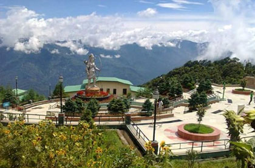

Cum doctus civibus efficiantur in imperdiet deterruisset.
With the enchanting environment and the mesmerizing landscape, the East Sikkim is a gorgeous tourist destination in the Sikkim. One of the four districts of the Sikkim state, the southeastern region of this Himalayan state is the prime tourist destination with the many beautiful places to explore and traditions and festivals to get acquainted with. The capital city of Sikkim, Gangtok is the prime tourist destination of East Sikkim. Apart from being the administrative hub of the state, the east Sikkim is also the hub of the tourism activities in the Himalayan region with the starting place of the tour is Gangtok.
The East Sikkim district happens to be a place rich in cultural and traditional diversity which makes it a prominent place to visit for the cultural activities. East Sikkim has the numerous tourist destinations which hold the importance for the tourists of various interests. Tourists can explore and understand the heritage, history, cultures and traditions of the region, as well as the view of the picturesque locality, will offer you a refreshing journey. The snow-covered peaks of the mountain range of the Mt. Kanchenjunga offers the magnificent natural view. The lush greenery, mesmerizing valleys, beautiful lakes, many old monasteries and temples adorned the east Sikkim which attracts thousands of tourists every year.
According to the History of the Sikkim, the southeastern Sikkim region was the part of the monarchy of Sikkim since the establishment of the monarchy in Sikkim except in the 19th century when the region went under the Bhutanese rule. But, it came under the British rule after the war of the British and the Bhutani forces, also known as the Anglo Bhutan War. After the Independence of India, the East Sikkim along with the other parts of the Sikkim was under the Sikkim monarch as the Indian protectee from 1947 to 1975. In 1975, after a public referendum in Sikkim, it was incorporated as the 22nd state of the Indian Union and thus east Sikkim becomes the part of the Sikkim state.
The Gangtok is the prime tourist destination and one of the most beautiful capital cities in India. The mesmerizing beauty of the landscape of the Gangtok and its nearby places is a big draw for the nature-loving tourists. The Dzuluk – Gnathang valley trip is another tourist attraction in the east Sikkim which is famously known as the Silk route. The area on this route is known for the pristine natural beauty as well as having the significant historical value.The east Sikkim zone is well connected to the other tourist destinations of the Sikkim as well as the neighboring states. The state capital, Gangtok, has an excellent tourism infrastructure with the wide range of hotels, restaurants and travel agencies for the tour assistance in the state. The road transport is also excellent as the NH 31A just passes through the mid of the East Sikkim. The helicopter service is available from the nearest airport of Bagdogra and Gangtok.
The Gangtok is the prime tourist destination and one of the most beautiful capital cities in India. The mesmerizing beauty of the landscape of the Gangtok and its nearby places is a big draw for the nature-loving tourists. The Dzuluk – Gnathang valley trip is another tourist attraction in the east Sikkim which is famously known as the Silk route. The area on this route is known for the pristine natural beauty as well as having the significant historical value.The east Sikkim zone is well connected to the other tourist destinations of the Sikkim as well as the neighboring states. The state capital, Gangtok, has an excellent tourism infrastructure with the wide range of hotels, restaurants and travel agencies for the tour assistance in the state. The road transport is also excellent as the NH 31A just passes through the mid of the East Sikkim. The helicopter service is available from the nearest airport of Bagdogra and Gangtok.
There Are Many Tourist Destinations In The East Sikkim District. Here Are Few Of Them:-
Gangtok:-
The capital of the Sikkim state, Gangtok, is also the tourism capital of the state. Most visited tourist destinations in the state, the Gangtok is located at an altitude of 5500 ft on the ridge of the hilly landscape and offers an outstanding view of the Mt. Khangchendzonga. The city of Gangtok is the best option to make the base for your Sikkim tour as the city is commendable tourist-friendly place with all the tourism facilities available within the city. The capital city was once the important connecting point between India and Tibet for the cross-border traders. Today, the city is the hub of the administrative, tourism, cultural, religious and community activities. This cosmopolitan town of Sikkim offers all possible amenities for the tourist- be it luxury hotels and resorts, economical lodges, multi-cuisine costly restaurants, inexpensive canteens, shopping complexes, roadside shops, cyber cafes, tourism service providers, many road transportation options. The city offers you the glimpse of the modern infrastructure and advanced living standard, along with the ancient religious, traditional and cultural activities which exist in the perfect harmony
| Sl.No | Number Of Persons | Standard Package Cost | Deluxe Package Cost |
|---|---|---|---|
| 1 | 2 Persons | INR 74044 | INR 78580 |
| 2 | 3 Persons | INR 84956 | INR 87436 |
| 3 | 4 Persons | INR 94348 | INR 103420 |
| 4 | 5 Persons | INR 98260 | INR 102276 |
| 5 | 6 Persons | INR 103572 | INR 117180 |
Here you can find the reliable information on how to plan hassle holiday plant to Sikkim. Sikkim Tourism India put together for tourists relevant details like how to reach Sikkim, best time to visit along with complete information on different means of transportation. You can also explore here the different tourist attractions and spots in Sikkim with the help of our navigation map.